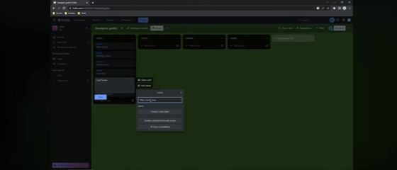

blender :
Lukky survole Blender, un logiciel 3D pour créer ses assets. Ici, ce n’est pas un tuto (comme toute la vidéo en fait), il nous montre comment cela se passe pour créer des assets 3D.

Formation : Godot University | Dossier source : image_d_01
---|  |
Trello :Ici Lukky (le présentateur) nous présente Trello. Il l’utilise pour s’organiser avec des cases : "à faire", "fait", "bloqué", etc., pour avoir les idées claires dans l’avancement du projet. |
blender :Lukky survole Blender, un logiciel 3D pour créer ses assets. Ici, ce n’est pas un tuto (comme toute la vidéo en fait), il nous montre comment cela se passe pour créer des assets 3D. |
|

|
Godot :C’est ici qu’on entre dans le vif du sujet : Godot, un moteur de jeu pour débutant. Ici, on voit à quoi il ressemble, comment faire un menu, coder les éléments de jeu, créer l’environnement 3D, etc. En bref, ici on voit comment Godot est utilisé par les pros ! |
GDScript :La dernière partie de la vidéo nous montre comment coder sur Godot. Ce n'est pas du C++ ni du C#, mais du GDScript : assez facile d’utilisation, efficace et adapté aux débutants. |

|